Si tant est que vos souvenirs vous échappent encore quelque peu, ce qu’il est important de vous remettre en tête, c’est le contexte politique de votre cité, et les dogmes des factions. Je sais bien que vos propres enseignements sont suffisamment ancrés en vous pour résister à tout choc, mais il n’est en pas forcément de même de ceux de vos rivaux. Je m’excuse par avance, si, dans ma volonté de faire succinct, j’écorne un peu la subtilité de vos philosophies respectives par des simplifications trop hâtives. Je ne doute pas que vous pourrez rectifiez mes errements auprès de vos pairs si besoin est.
Je commencerai par la triade de l’Ordre, que constitue la Fraternité de l’Ordre, L’Harmonium et les Rectifieurs. Ces trois factions, clairement orientées du côté de la Loi et qui ont toutes leur Siège au sein du plus riche quartier de Sigil, le Quartier de la Dame, sont les rouages du système judiciaire de Sigil.
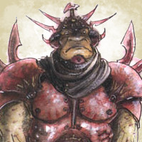 L’Harmonium, dont le credo est la recherche de l’harmonie et de la paix sociale à tout prix, a pour charge l’arrestation des criminels. Basés dans les Casernes de la Cité, les membres de cette faction considèrent détenir les clés d’une société harmonieuse, et combattent avec virulence tout fauteur de trouble. En effet, s’il faut la guerre pour obtenir la paix, l’Harmonium ne reculera pas devant ce maigre sacrifice. Cette conception un peu martiale de la paix, associée à leur sentiment inébranlable de détenir la vérité, les a fait surnommer les Têtes-dures.
 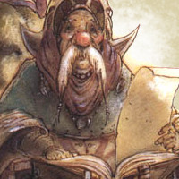
Une fois
arrêté, un suspect est remis à la Fraternité de
l’Ordre, qui chérit l’Ordre, et voit dans la Loi
le fondement du multivers. En effet, selon eux,
toute chose a des lois, que ce soit des lois de
convention comme celles qui régissent la société,
ou des lois immuables comme celles qui
régissent la nature ou la magie. Ses membres
se consacrent à l’étude et la découverte de ses
lois, seul moyen de contrôler les phénomènes
qui en résultent. On les surnomme les Greffiers,
et ce sont eux qui ont pour rôle, en se basant
sur leur connaissance aigüe des lois, de juger
les suspects qui sont amenés au Grand Tribunal,
leur QG. Leur rôle se limite à décider de
la culpabilité ou non du suspect.
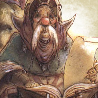
Une fois
arrêté, un suspect est remis à la Fraternité de
l’Ordre, qui chérit l’Ordre, et voit dans la Loi
le fondement du multivers. En effet, selon eux,
toute chose a des lois, que ce soit des lois de
convention comme celles qui régissent la société,
ou des lois immuables comme celles qui
régissent la nature ou la magie. Ses membres
se consacrent à l’étude et la découverte de ses
lois, seul moyen de contrôler les phénomènes
qui en résultent. On les surnomme les Greffiers,
et ce sont eux qui ont pour rôle, en se basant
sur leur connaissance aigüe des lois, de juger
les suspects qui sont amenés au Grand Tribunal,
leur QG. Leur rôle se limite à décider de
la culpabilité ou non du suspect.
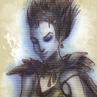 Tout suspect déclaré coupable est alors confié aux Rectifieurs, qui ont la charge de déterminer et d’appliquer sa peine. Ceux-ci, établis dans la Prison de Sigil, considère que le principe dominant du multivers est celui de Justice. Nul ne doit pouvoir échapper à ses crimes, et nul innocent ne doit être injustement puni. Cette faction a véritablement à coeur de s’assurer que telle justice soit rendue, et leur persévérance à poursuivre les criminels reconnus pour appliquer la sentence leur a valu le surnom de Mort Rouge.
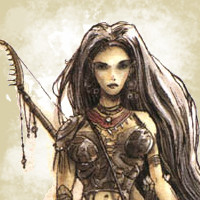Toujours dans le quartier de la Dame, à la lisère du Bas quartier, se trouve aussi l’Armurerie, qui abrite la faction de la Garde Fatale, dont la philosophie est bien différente. Ces derniers affirment en effet que l’Entropie est le principe directeur du multivers. Toute chose va vers sa destruction, multivers compris, et il n’y a pas lieu d’y résister, car cette destruction est la marche naturelle des plans. Les membres de la Garde Fatale embrasse l’impermanence des choses, et s’opposent généralement aux tentatives de ceux qui voudraient retarder l’inéluctable, se délectant du spectacle de l’entropie. C’est pour cela que les Sombreurs, comme on les surnomme, vendent des armes, outil construit pour détruire.
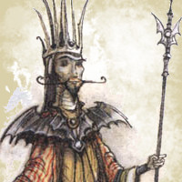 A l’opposé de cela, les Adorateurs de la Source voient dans l’image de la forge celle d’une mise en forme de la matière qui se fond en quelque chose de supérieur au matériau initial par l’épreuve du feu. Installés dans la Grande Fonderie de la cité, au coeur du Bas Quartier, qui fournit de nombreux outils aux habitants de la Cage, ces factionnaires considèrent que chaque individu voit sa destinée et sa nature mêmeforgée par ses propres actes. Chaque acte a des conséquences, qu’il y ait ou non des témoins, car le multivers teste chaque individu, et forge sa nature et son caractère au travers des épreuves et choix qu’il lui soumet. Ainsi, celui qui sait faire les bons choix affine sa nature, et s’élève. Ses actes déterminent sa vie future, et cela au delà de son enveloppe matérielle, car les êtres sont tous issus d’une même Source, s’élevant vers des formes supérieures quand leurs actes répondent aux tests du multivers, ou au contraire, retournant à des formes plus basiques. Cette croyance dans le potentiel de chacun, et la possibilité que tout être puissent accéder aux formes les plus élevées, telle que la divinité, leur vaut le surnom d’Homme-Dieux.
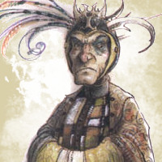 Mais tout le monde ne considère pas les Divinités comme une forme supérieure, et une faction entière s’est dévouée à dénoncer leurs mensonges. Les Athars, en effet, se consacrent à la lutte contre les imposteurs que sont ces Puissances qui réclament la foi des masses. Nul ne peut se prétendre Dieu et réclamer l’adoration des autres, clament les Athars, et les Puissances qui le font ne sont que des êtres de grandes puissance qui protègent égoïstement leurs propres intérêts en entretenant un mensonge et cachant la Vérité. Les membres de cette faction se sont établis dans le Temple Fracassé, un symbole du bien fondé de leur croyance et de la faillibilité des Puissances, puisqu’il s’agit de l’ancien temple d’une divinité des portails, Aoskar, mise à mal par la Dame il y a des éons.
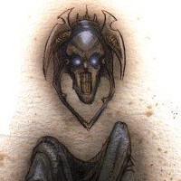 Au delà du Bas Quartier, on trouve la Ruche, le quartier le plus pauvre de Sigil, amas de ruelles sinistres et dangereuses, où l’Harmonium hésite à s’aventurer. La misère y est criante et la violence monnaie courante. C’est dans cet environnement dépouillé qu’ont choisi de s’installer les Hommes-Poussières, dont le QG est la Morgue de Sigil. Ces derniers considèrent en effet que nous sommes tous morts et qu’il est vain de s’attacher à ses simulacres de vie. Le multivers est un lieu sombre, de souffrance et de misère et pour échapper à cette souffrance et trouver la paix, il est nécessaire de savoir renoncer aux illusions, se purger de ses attaches et de ses passions, afin de trouver la Vraie Mort. Attention, il ne s’agit pas de se jeter par la première falaise venue, la mort violente suscite trop d’émotions, réveille des instincts primaux factices, et nous éloigne du vrai repos. Pour preuve, la plupart des lascars qui meurent ainsi reviennent sous la forme de suppliants, pas plus avancés que les autres. Sans surprise, on surnomme cette faction les Morts.
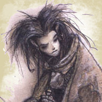 La vision de la Morne Cabale, autre faction de la Ruche, n’est pas bien plus optimiste, mais elle est plus tournée vers la compassion. Selon les Mornés, il n’y a aucun sens au multivers, nous n’avons aucune raison d’être ici-bas, le multivers est absurde et qui cherche à découvrir une raison supérieure à ce qui s’y passe ne fait que se fourvoyer. C’est une vérité difficile à admettre, et beaucoup deviennent fous, incapable de supporter l’absence de tout sens à la vie. Mais ceux qui tiennent tendent à se tourner vers les autres et aider leurs semblables à affronter ce monde absurde, tout en essayant de leur ouvrir les yeux. Ils s’occupent donc de la Loge, leur QG, qui sert de soupe populaire, d’orphelinat et d’asile, recueillant les miséreux et les perdus.
 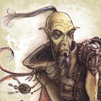
Enfin,
même s’ils n’ont guère de
QG fixe, les Xaositectes
se retrouvent aussi en
général dans la Ruche,
où leur comportement erratique leur vaut
moins de problèmes avec l’Harmonium. Cette
faction prône en effet que le Chaos est la
force primordiale du multivers, que tout a
des exceptions, qu’il faut savoir incarner le
chaos pour entrevoir le véritable mouvement
du Multivers, embrasser l’imprévisible et briser
toutes les prisons que les Lois essaient
d’imposer au libre mouvement du chaos. On
les surnomme aussi les Chaoteux.
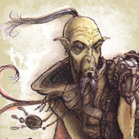
Enfin,
même s’ils n’ont guère de
QG fixe, les Xaositectes
se retrouvent aussi en
général dans la Ruche,
où leur comportement erratique leur vaut
moins de problèmes avec l’Harmonium. Cette
faction prône en effet que le Chaos est la
force primordiale du multivers, que tout a
des exceptions, qu’il faut savoir incarner le
chaos pour entrevoir le véritable mouvement
du Multivers, embrasser l’imprévisible et briser
toutes les prisons que les Lois essaient
d’imposer au libre mouvement du chaos. On
les surnomme aussi les Chaoteux.
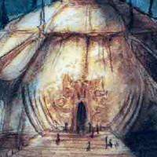 Bordant la Ruche, mais séparé par un mur protecteur, se trouve le Quartier des Gratte-Papiers, où se trouve l’essentiel de l’administration de la cité. En tout premier, la Chambre des Orateurs, où les représentants des différentes factions débattent des lois, décrets et édits de la Cité des Portes. Une instance particulière est le Conseil des Factols, où les représentants des 15 factions officielles peuvent voter tout édit ou loi s’appliquant à Sigil. Ils peuvent même destituer un de leur pairs, ou changer ses attributions (ainsi le rôle législatif de la triade de l’ordre lui a été confié par cet organe), mais il faut dans ce cas là au moins 10 votes exprimés en faveur de ce changement.
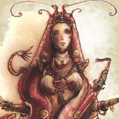 C’est les membres de la faction du Signe de l’Un qui préside ces sessions, donnant la parole à chacun et veillant au bon déroulement de ses sessions et à l’enregistrement de ses minutes. Leur factol a ainsi le pouvoir de convoquer un conseil des factols. Cette faction estime être au centre du multivers, qu’elle ne voit que comme une projection de son univers mental. Rien n’existe hors de son imagination, et le Multivers émane de celle-ci,ou tout du moins de l’esprit de l’Un, qui est sans aucun doute l’un d’entre nous, disent-ils. Et pour preuve de leurs dires, ils affirment pouvoir influencer le Multivers en se concentrant pour mieux maîtriser leur pensée consciente ou non. Toujours est-il que comme ils ne perçoivent les autres que comme des créations de leur esprit, des aspects de leur inconscient, ils sont généralement assez ouverts à laisser chacun s’exprimer, et font au final de bon présidents de sessions, si tant est que l’on supporte leur arrogance.
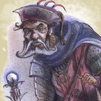 Pas loin de là, on peut aussi trouver les Archives, le QG des Marqués, où sont récoltées les taxes et conservés les actes de propriétés, cadastres, et autres documents administratifs d’importance. Ce sont eux qui collectent les taxes qui sont reversées aux différentes administrations, se servant largement au passage et qui enregistrent les transactions. Ils estiment que le Multivers appartient à ceux qui savent le saisir, et que chacun est maître de son propre destin. Seuls les faibles et les incapables pleurent sur leurs malheurs. Un Marqué sait accepter les écueils et rebondir, ne reportant jamais la responsabilité de ses échecs ou réussites sur autrui. Ils sont connus pour respecter la force, mépriser mendiants et fainéants auxquels ils refusent toute aide, et refuser tout aussi net toute offrande ou acte de pitié envers eux. Ils ne comptent que sur eux-mêmes et ne prennent que ce qu’ils estiment mériter. Cette attitude dure envers les miséreux qui ne font rien pour sortir de leur affres leur vaut le surnom de Sans-Coeurs ou de Râfleurs.
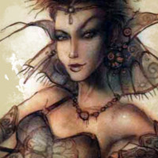 Mais le quartier de Gratte-Papiers contient aussi un lieu d’art et de loisirs. Loin de la froideur procédurale et administrative de leur voisins, la Société des Sensations gère la Salle des Fêtes de la Cité. Ils y organisent conférences, expositions, spectacles et autres réjouissances, stimulant aussi l’activité créatrice de Sigil par diverses subventions généreusement offertes aux spectacles originaux. Les membres de cette faction, surnommés les Sensats, estiment en effet que l’on ne peut appréhender le multivers que par ses sens et émotions. C’est en vivant de multiples expériences que l’on saisit la réalité des choses et ce n’est qu’en accumulant autant d’expériences variées que l’on peut espérer trouver la Vérité. L’exploration des sensations du multivers est donc une préoccupation primordiale de cette faction, qui pour faciliter cela a créé des objets magiques capables d’enregistrer de telles sensations et de les conserver, permettant à chacun de revivre l’expérience de celui qui l’a enregistrée. La salle des Fêtes contient un grand nombre de ces sensoriums, la faction payant grassement ceux qui viennent enregistrer des sensations inédites et comptant aussi sur tous ses membres pour toujours élargir sa collection unique.
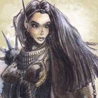 Loin de cette vision plutôt autocratique, l’Ordre Transcendental est à l’écoute du multivers et de la Cadence des Plans. Loin des théories, ils cherchent à ressentir le multivers en eux, trouver l’harmonie intérieure qui les mènera à la sagesse. Pour ce faire, ils prétendent qu’il faut être à l’écoute du Présent et ne pas laisser ses réflexions créer de la distance. Se perdre dans le passé de ses souvenirs, ou se projeter vers l’avenir par des planifications abstraites est un piège qui nous éloigne de notre corps et de l’instant. La meilleure façon d’habiter le présent c’est l’action. La réflexion est stérile, comme les débats interminables. C’est en unifiant le corps et l’esprit, l’action et la pensée, que l’on parvient à l’harmonie, que l’on suit son instinct, ressent la cadence des plans et trouve sa place dans le Multivers. Les Chiffrés, ainsi qu’on les surnomme, gèrent le Grand Gymnase où chacun peut détendre et entraîner son corps.
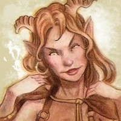 Le proche quartier du Marché n’abrite pas de faction officielle, mais la Ligue Libre veille officieusement sur le Grand Marché. Ces derniers, surnommés les Indés, ne se revendiquent pas comme une faction. Ce sont de libres penseurs qui défendent farouchement cette liberté de trouver sa propre voie. Il ne sert à rien de laisser d’autres indiquer la voix, disent-ils, on ne peut trouver sa vérité qu’en la cherchant soi-même. Ils s’opposent ainsi à tous ceux qui essayent d’imposer leur opinion, ou dicter aux gens la manière dont ils devraient penser, ce qui décrit malheureusement la plupart des factions, et leur laisse peu d’alliés.
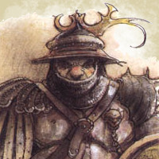 Ils ne vont cependant pas aussi loin que la Ligue Révolutionnaire, qu’on surnomme aussi les Anarchistes. Ces derniers considèrent que le système entier des factions est corrompu et nous empêche de trouver tout sens au multivers. Ils cherchent donc à le renverser, à l’abolir, généralement par des techniques de sabotages basées sur de l’infiltration des factions dont ils déterrent les secrets sales pour les exposer à tous, ou dont ils étudient les défenses pour planifier quelque sabotage. Cette Société Secrète, organisée en cellules indépendantes pour plus de sûreté, est évidemment complètement illégale et les factions de l’ordre en particulier luttent activement contre ces fléaux qui veulent renverser les fondements de la société sigilienne.